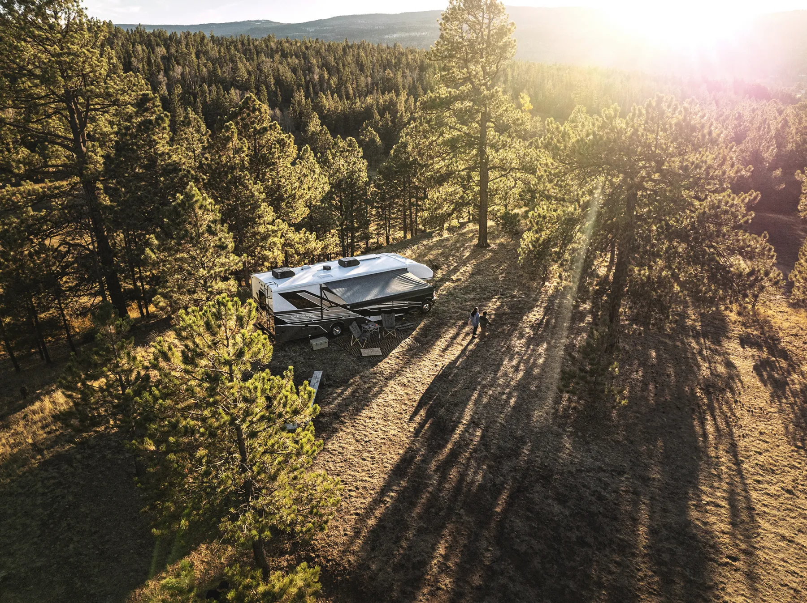

Two years. Then three.
A 2-year limited warranty, twice as long as the industry standard, and 3 years of structural protection — straight from the people who built the coach.
When you buy a Jayco RV, you get the best manufacturer’s warranty — and then some. Two camping seasons of limited warranty coverage, three years of structural protection, and the warranties Jayco’s supplier-partners put on their own components.
It comes directly from Jayco, because Jayco believes in the work it does and counts its owners as family. Your dealer is who services it.

The warranty in four numbers
- 2 years Limited warranty, starting the day the RV is delivered to its first retail buyer. Two full camping seasons.
- 3 years Structural coverage for the walls, roof and floor framing and the lamination of the fiberglass walls. Not on Class B motorhomes.
- 24,000 mi The limit on a motorhome’s 24-month limited warranty, whichever comes first.
- 10 days To report a defect once you find it, so a small fault is fixed while it is still small.
What’s covered.
If a substantial defect in material or workmanship attributable to Jayco is found and reported during the warranty period, Jayco repairs or replaces it, at its option, at no charge to you.
Who and what
- The first consumer purchaser of a new Jayco.
- RVs sold in, and that remain in, the United States, U.S. Territories and Canada.
- Used for their intended purpose: recreational travel and camping.
- Service through an independent, authorized Jayco dealer, or Jayco.
Structure Components, for 3 years
- Lamination of the fiberglass sidewall, rear wall and front wall (wrap) assemblies — the bond between the fiberglass skin and its substrate.
- Sidewall, end wall, and front and rear wall frame assemblies, wood and aluminum.
- Roof frame and floor frame assemblies, wood and aluminum.
Not covered, for example
- Components warranted by their own manufacturer — tires, batteries, generator, awning, refrigerator, water heater, furnace, air conditioner and more. Those makers cover them directly.
- Items added or changed after the RV leaves Jayco, including dealer-installed equipment.
- Normal wear and tear, condensation, and mold.
- Damage from accidents, weather, overloading, off-road use or missed routine maintenance, such as resealing.
- RVs used for rental or business, bought at auction or wholesale, or from a dealer that is not authorized by Jayco.
- Structure Components exclude the front and rear fiberglass caps, exterior roof material, floor coverings, and delamination from water intrusion caused by missed seal maintenance.
Cosmetic damage from the factory is covered only if you point it out to the selling dealer when you take delivery — so look the coach over before you drive away.
Four steps to a repair.
Some warranty service during the term is normal. To get it, the warranty asks you to:
-
Tell a dealer, or Jayco
Notify an independent, authorized Jayco dealer, or Jayco, of the defect within the coverage period.
-
Within 10 days
Report it within ten days of when you discovered it, or should have.
-
Book the repair
Promptly schedule an appointment and take the RV in. Jayco does not control dealers’ schedules, so call early — before the week you want to travel.
-
Cover the trip there
Freight, transportation and other incidental costs of getting the RV to service are yours.
If two or more service attempts have not corrected a covered defect, or repairs have taken longer than 30 days, notify Jayco directly, in writing: Jayco, Inc., Attn: Customer Service, 903 S. Main Street, P.O. Box 460, Middlebury, Indiana 46540. For help at any time, call 800-283-8267.
A warranty says how it was built.
Jayco’s 2-year limited warranty is twice as long and offers much more coverage than any other manufacturer’s. The completeness of a warranty, how long it runs and who stands behind it are direct indicators of how an RV is built.
Warranty claims help too: two seasons of them show Jayco’s engineers which features get used most and how they hold up, and that goes into every new model year.
What a warranty says about an RVBefore you need it.
-
Registration
Your dealer registers the warranty. They complete Jayco’s online Warranty Registration and Customer Delivery Form within 10 days of delivery, and the limited warranty becomes active once they do. They also help you register the components that carry their own warranty.
-
Transfer
The Jayco warranty applies to the first consumer purchaser and is not transferable. A motorhome’s chassis warranty is transferable while it lasts. If you buy a Jayco used, send the Change of Ownership Form so recall notices reach you.
-
Extended warranties
Offered by your local Jayco dealer, not by Jayco.
-
Away from home
Call 800-283-8267 or use Find a Dealer to locate the nearest authorized dealer. If there is none nearby, ask campground staff or your selling dealer about a repair facility, and have them talk to Jayco Customer Service about coverage before the repair. After hours, get it fixed and call Customer Service the next business day.
-
Pinnacle, North Point, Eagle and Seismic
The same warranty, without the exclusion for an RV used as a residence.
-
Jay Flight Bungalow
Written for a semi-permanent site. Jayco covers the cost of service at the site for the first three service calls within the first two years, when the site is within an hour’s round trip of an authorized dealer.
Our partners have your back too.
Jayco carefully selects suppliers that share a dedication to quality and RVer support, and many put long warranties on their own parts.
- 3 years
- Congoleum® Designer Carefree Flooring
- MORryde® Rubber Pin Box Assembly
- Onan® Generator
- Standard Technologies Fuel Pump System
- 5 years
- BGS Graphics
- Winegard® Rayzar® & Roadstar Antenna Parts
- Dexter® Axles
- Samsung® Refrigerator — sealed system and labor on the digital inverter compressor (10 years on compressor parts)
- 6 years
- Intervac™ Central Vacuum
- Goodyear® Endurance® Tires
- 7 years
- Shaw® Vinyl Flooring (cold cracking only)
- 20 years
- Dicor Roofing Material
- 25 years
- Huber Industrial Floor Decking
- Lifetime
- Tredit™ Aluminum Wheels (steel, 2 years)
Disclaimer: This webpage is provided for informational and convenience purposes only. This webpage does not create any legal and/or warranty rights, obligations and/or duties. Jayco makes no warranty of any nature whatsoever other than the applicable Jayco Limited Warranty that came with the recreational vehicle at the time of purchase. Any other warranty issued by a supplier for a component part is separate from the Jayco Limited Warranty. For complete information concerning actual warranty eligibility and/or coverage regarding a specific component and/or supplier, please consult the warranty information and/or owner’s manual applicable to the specific component and/or contact the supplier of the specific component directly. Components may vary depending on the year, model, and/or floor plan of the recreational vehicle. The recreational vehicle may not be equipped with all of the components listed on this webpage. Simply because a component is listed on this webpage, does not mean the recreational vehicle comes equipped with the component. The components and suppliers listed on this webpage are subject to change by Jayco without notice to the dealer and/or the consumer.
Read every word of it.
The warranty guide has the full terms and exclusions, and your owner’s manual has the maintenance checklist that keeps the limited warranty in force.
If you believe Jayco has not met its warranty obligations, you may be eligible for the RV Warranty Dispute Program: no-cost, voluntary and independent. About the program.
The warranty, answered.
All Jayco towable products come with a 2-year limited/3-year structural warranty. The limited warranty on Jayco motorhomes covers you for 24 months or 24,000 miles, whichever comes first. The 3-year structural coverage does not apply to Class B motorhomes.
The Jayco warranty covers substantial defects in materials or workmanship that are attributable to Jayco. Components with their own manufacturer’s warranty, such as the refrigerator, generator, tires and air conditioner, are covered by that manufacturer. What is and is not covered.
Our Jayco 2-year limited warranty/3-year limited structural warranty applies to the first consumer purchaser and is non-transferable. The chassis warranty on a Jayco motorhome is transferable if it has not yet expired.
Extended warranties on Jayco products are provided by your local Jayco dealer. You can find your nearest Jayco dealer using Find a Dealer.
Your dealer does it. The selling dealer completes Jayco’s online Warranty Registration and Customer Delivery Form within 10 days of delivery, and the limited warranty becomes active once they have. Ask them to confirm it at handover.
Within 10 days of discovering it, and within the coverage period. Tell an authorized Jayco dealer, or Jayco, then book the repair. If two or more attempts have not fixed a covered defect, or repairs have taken longer than 30 days, notify Jayco in writing at 903 S. Main Street, P.O. Box 460, Middlebury, Indiana 46540.